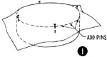
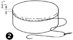
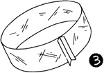
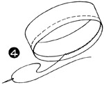

Select any picture to view an
enlargement in a new window
1952—How to Make Hats
by Ruby Carnahan
How to Cover a Pill Box Frame
HOW TO COVER A PILL BOX
Make a Pill Box frame (page 35) or use a ready-made Pill Box frame. Pill Box Hat requires half yard of material for covering frame.TOP OF CROWN
(Illus. 1) Cut 13" square of material and lay on top of crown. Pin front, back and sides to crown top, stretching material as you pin.
Turn material over edge of crown 1/2" and baste to side crown (lilus. 2). Cut off excess material around crown under basting.
SIDE CROWN
(Illus. 3) Cut a bias piece of material 2" wider than frame side crown measures. Pin one edge of bias piece to top of crown, stretching bias as you pin.
Pin ends together making a bias seam, stitch and press seam open. Return bias piece to side crown with seam in back. Turn material under 1" around top of crown, and balance of material turn over bottom edge of crown and sew to inside of crown. (Illus. 4).
LINING PILL BOX
Requires a lining and headband.
Instructions page 45.